Lotte World Seoul Reiseführer 2026
Tickets, Magic Pass, Prioritäten bei Fahrgeschäften und ein realistischer Plan für den Tag
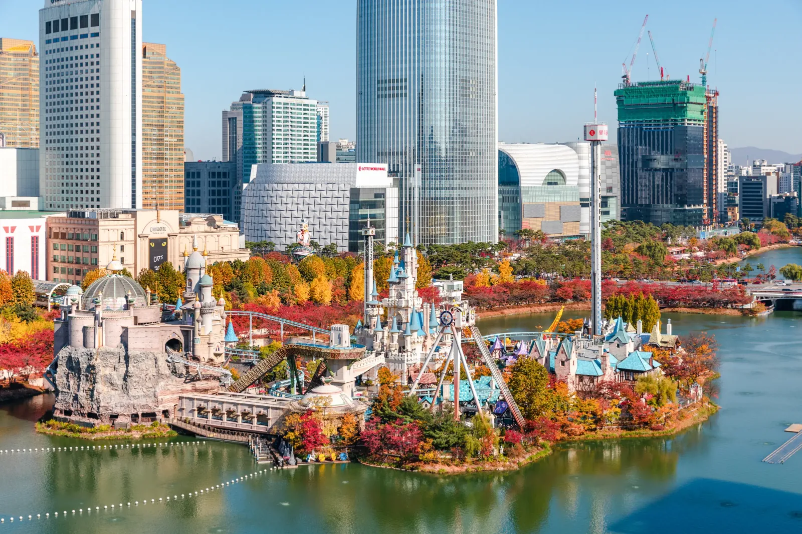
Wenn Fahrgeschäfte der Grund für den Lotte-World-Besuch sind, den Park als Hauptereignis behandeln und ihm den Tag geben. Lange Warteschlangen, der Wechsel zwischen Adventure und Magic Island, Mahlzeiten, Pausen und Wetter können deutlich mehr Zeit verbrauchen, als die Karte vermuten lässt.
Nicht mit einer Liste aller Fahrgeschäfte beginnen. Zuerst verstehen, was im Park tatsächlich vorhanden ist. Dann 3–5 Fahrgeschäfte auswählen, deren Auslassen wirklich enttäuschen würde, und den restlichen Tag darum bauen. Diese Entscheidung macht es außerdem viel leichter zu beurteilen, ob ein After4-Ticket oder ein Magic Pass den Aufpreis tatsächlich wert ist.
Die kurze Antwort
Ein 1Day-Ticket ist die sicherere Wahl, wenn dies der erste Besuch ist und Fahrgeschäfte wichtig sind. Ein After4-Ticket kann funktionieren, wenn ein kürzerer Abendbesuch reicht, nur wenige Prioritäten bestehen oder Atmosphäre genauso wichtig ist wie die Zahl der Fahrgeschäfte.
Mit jüngeren Kindern einen guten Tag nicht daran messen, wie viele Attraktionen geschafft werden. Größenbeschränkungen, Warteschlangen, Mahlzeiten, Lärm und einfache Müdigkeit können wichtiger sein als noch ein zusätzliches Fahrgeschäft.
Und nur weil Aquarium, Seoul Sky und Seokchon Lake direkt daneben liegen, gehören sie nicht automatisch alle in denselben Reiseplan. Wenn Lotte World der Grund für den Besuch in Jamsil ist, die Zeit schützen, wegen der man gekommen ist.
Schnelle Entscheidung
Einen vollen Lotte-World-Tag wählen, wenn:
mehrere Pflichtfahrgeschäfte wichtig sind, dies der erste Besuch ist oder lange Warteschlangen nicht jedes Mal eine andere Attraktion aus dem Plan drängen sollen.
After4 wählen, wenn:
eine kürzere Fahrgeschäftsliste ausreicht, hauptsächlich die Abendatmosphäre interessiert oder Lotte World nur ein Teil eines Jamsil-Tages ist.
Mit jüngeren Kindern unterwegs?
Zuerst Größenbeschränkungen prüfen. Dann entscheiden, welche Fahrgeschäfte überhaupt relevant sind und ob Magic Pass den Aufpreis wert ist. Nach Energie und Pausen planen, nicht nach einer Zielzahl von Fahrgeschäften.
Eine Regel vor jedem Kauf:
Zuerst Pflichtfahrgeschäfte wählen. Danach Magic Pass wählen.
Welches Lotte-World-Ticket solltest du kaufen?
Für die meisten Erstbesucher geht es nicht um den Vergleich jedes Tickets, das Lotte World verkauft. Die eigentliche Frage lautet: Braucht der gewünschte Tag einen ganzen Tag im Park oder reicht ein Eintritt ab 16 Uhr?
1Day: die sicherere Wahl, wenn Fahrgeschäfte wichtig sind
Ein 1Day-Ticket wählen, wenn mehrere Fahrgeschäfte nicht verpasst werden sollen.
Die zusätzlichen Stunden zählen, weil nutzbare Parkzeit nicht nur Fahrzeit ist. Zeit geht verloren durch: Warteschlangen Orientierung zwischen Adventure und Magic Island Mahlzeiten Toilettenstopps Wetteränderungen Attraktionen, die vorübergehend außer Betrieb gehen
Ein Ganztagsticket garantiert nicht, dass alles gefahren werden kann. Es gibt mehr Spielraum, wenn der Plan sich verändert.
Es ist die bessere Wahl, wenn:
- dies der erste Lotte-World-Besuch ist
- 3–5 Pflichtfahrgeschäfte festgelegt sind
- beliebte Fahrgeschäfte ein Hauptgrund des Besuchs sind
- Kinder regelmäßige Pausen brauchen
- Magic Pass strategisch genutzt werden soll
- eine einzige lange Warteschlange nicht den Rest des Tages zerstören soll
After4: gutes Preis-Leistungs-Verhältnis nur bei bewusst kürzerem Tag
Der After4-Eintritt beginnt um 16:00 Uhr.
Das kann sinnvoll sein für: wenige ausgewählte Fahrgeschäfte, Fotos, Abendatmosphäre oder einen kürzeren Lotte-World-Besuch nach einem anderen Programmpunkt am Vormittag.
After4 sollte aber nicht einfach als billigere Version des 1Day-Tickets verstanden werden.
Wer nach 16 Uhr mit fünf großen Fahrgeschäften, Schuluniform-Miete, Abendessen, Parade und Magic Island auf der Liste ankommt, hat schon vor dem Eintritt ein Zeitproblem erzeugt.
After4 wählen, wenn:
- nur wenige Prioritätsfahrgeschäfte genügen
- Abendatmosphäre wichtiger ist als die Zahl der Fahrgeschäfte
- Lotte World nur ein Teil des Jamsil-Tages ist
- bereits akzeptiert wurde, dass einzelne große Attraktionen ausgelassen werden können
After4 nicht als Standardlösung wählen, wenn dies der einzige Besuch ist und mehrere stark nachgefragte Fahrgeschäfte unverhandelbar sind.
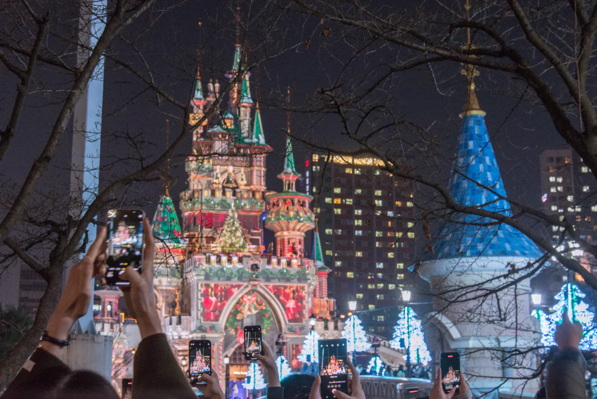
Aktuelle offizielle Ticketpreise
Geprüft: 15. September 2026
| Ticket | Erwachsene | Jugendliche | Kinder |
|---|---|---|---|
| 1Day | ₩67,000 | ₩58,000 | ₩50,000 |
| After4 | ₩55,000 | ₩47,000 | ₩39,000 |
Das sind die regulären offiziellen Preise von Lotte World.
Dasselbe Eintrittsprodukt kann über Online-Attraktionsplattformen günstiger erhältlich sein. Als praktische Orientierung ungefähr 20–30 % Ersparnis prüfen; einzelne Aktionen können noch größer ausfallen. Preise variieren nach Datum und Verkäufer. Vor Buchung den aktuellen Preis prüfen.
Was enthalten ist – und was nicht
Das Standardticket für Lotte World umfasst den Eintritt zu Lotte World Adventure und die Nutzung regulärer Attraktionen. Separat kostenpflichtige Einrichtungen wie bestimmte Arcade-Spiele sind ausgenommen. Das reguläre umfassende Ticket enthält außerdem den Eintritt ins Folk Museum.
Das Folk Museum ist nützlich, wenn es wirklich besucht werden soll. Für die meisten fahrgeschäftsorientierten Besucher sollte es die Hauptentscheidung zum Ticket aber nicht bestimmen. Die größere Frage bleibt: Wie viel Parkzeit brauchst du?
Noch wichtiger:
Magic Pass ist im normalen Eintritt nicht enthalten.
Er ist ein separates Produkt mit begrenzter Stückzahl. Ein normales Lotte-World-Ticket gibt keinen automatischen Prioritätszugang zu Fahrgeschäften.
Magic Pass wird später in diesem Guide behandelt, weil die richtige Reihenfolge lautet:
Besuchsdauer wählen → Pflichtfahrgeschäfte wählen → erst dann entscheiden, ob Magic Pass den Aufpreis wert ist.
Ticketpreis vor der Buchung prüfen
Lotte World bietet regelmäßig eigene Rabatte. Trip.com und andere Attraktionsplattformen können für dasselbe Datum andere Ticketpreise oder Pakete anbieten.
Vergleichen:
- Endpreis
- 1Day oder After4
- was tatsächlich enthalten ist
- Stornierungsbedingungen
- nur Eintritt oder Paket
Adventure oder Magic Island: zuerst entscheiden, wo der Tag beginnt
Lotte World besteht aus Adventure, dem großen Indoor-Park, und Magic Island, dem Außenbereich auf dem Seokchon Lake.
Zwischen beiden kann tagsüber gewechselt werden. Das bedeutet aber nicht, dass jedes Mal hin- und hergelaufen werden sollte, sobald auf der Karte ein anderes Fahrgeschäft interessant aussieht.
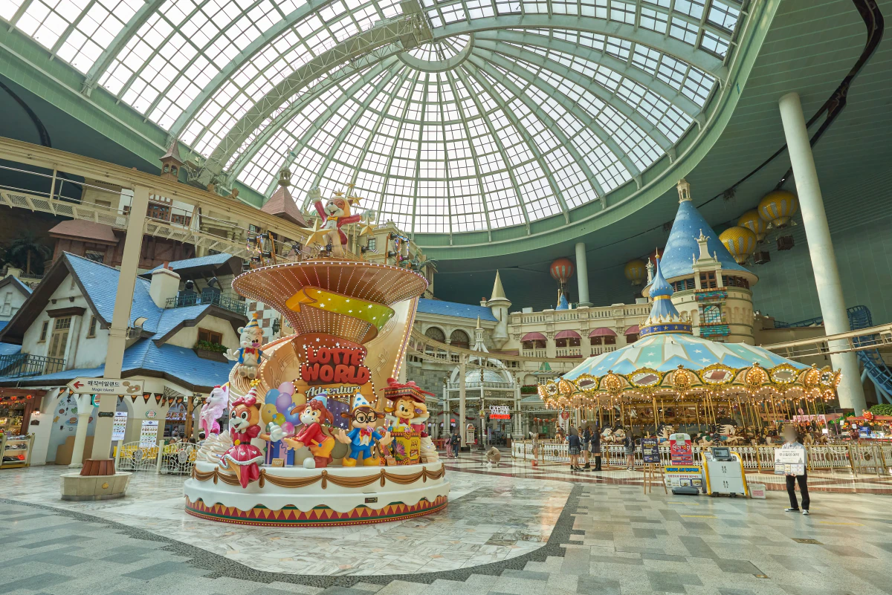
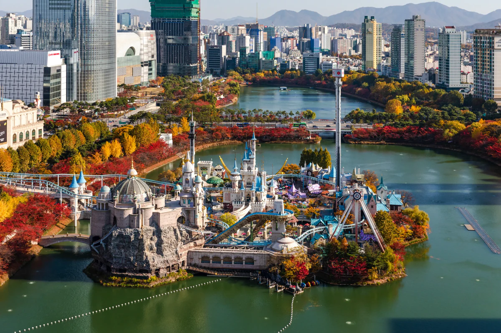
Die erste Frage sollte einfacher sein:
Wo liegen die Fahrgeschäfte, die dir am wichtigsten sind?
Adventure: die sicherere Basis bei unsicherem Wetter
Adventure ist die überdachte Seite von Lotte World unter einer großen Glaskuppel.
Dort befinden sich Fahrgeschäfte, Shows, Familienattraktionen und mehrere der größeren Indoor-Erlebnisse des Parks. Bei Regen, starkem Wind, Hitze oder Kälte ist dieser Teil außerdem verlässlicher.
Adventure ist ein sinnvoller Start, wenn:
- die meisten Pflichtfahrgeschäfte drinnen liegen
- jüngere Kinder dabei sind
- die Wetterprognose schlecht ist
- Essen und Pausen leichter zugänglich sein sollen
- der Tag lieber um Attraktionen gebaut wird, die weniger vom Wetter abhängen
Aber: Indoor bedeutet nicht kurze Warteschlange. Beliebte Adventure-Fahrgeschäfte können weiterhin einen großen Teil des Tages verbrauchen.
Magic Island: priorisieren, wenn die wichtigsten Fahrgeschäfte draußen liegen
Magic Island liegt draußen auf dem Seokchon Lake und ist von Adventure über die Brücke im zweiten Stock erreichbar.
Hier konzentrieren sich mehrere große intensive Fahrgeschäfte, darunter Atlantis, Comet Express und die Gyro-Attraktionen.
Wenn zwei oder drei der höchsten Prioritäten auf Magic Island liegen, diese nicht einfach bis zum späten Tag verschieben, nur weil Adventure der erste Bereich ist, den man sieht.
Wetter und Betriebsstatus prüfen. Dann entscheiden, ob Magic Island den ersten ernsthaften Fahrgeschäftsblock verdient.
Wetter kann den Wert des Plans verändern
Magic Island ist stärker vom Wetter abhängig.
Einige Außenattraktionen können wegen Regen, Wind, hoher oder niedriger Temperaturen oder betrieblicher Bedingungen vor Ort ausgesetzt werden. Das ist wichtig, weil ein Fahrgeschäft, das „später noch gemacht“ werden sollte, später eventuell nicht mehr fährt.
Wenn die Wetterlage instabil aussieht und eine Außenattraktion zu den Pflichtfahrgeschäfte gehört, sie früher einplanen statt als Extra für den Tagesabschluss.
Gleichzeitig nicht nur deshalb nach draußen hetzen, weil Magic Island bekannte Fahrgeschäfte hat. Wenn die eigenen Prioritäten drinnen liegen, gibt es keinen Preis dafür, der Rangliste eines anderen Reisenden zu folgen.
Den Tag nicht mit ständigem Zonenwechsel verschwenden
Adventure und Magic Island sind verbunden. Wiederholtes Zurücklaufen kostet trotzdem Zeit.
Fahrgeschäfte nach Zone bündeln. Dort beginnen, wo Prioritäten und Wetter den meisten Sinn ergeben.
Nur aus einem guten Grund wechseln: ein bestimmtes Fahrgeschäft eine Mahlzeit eine Show schlechtes Wetter eine Pause
Nicht wegen:
„Wir haben auf der Karte noch etwas anderes gesehen.“
Vor dem Eintritt 3–5 Pflichtfahrgeschäfte markieren und notieren, auf welcher Seite des Parks sie liegen.
Dieser eine Schritt sagt mehr über den richtigen Start als eine generische Liste der „besten Fahrgeschäfte“.
Welche Fahrgeschäfte gibt es in Lotte World?
Diese Liste soll Lotte World nicht zur Checkliste machen. Sie soll zeigen, was im Park tatsächlich vorhanden ist, damit die wenigen wirklich wichtigen Fahrgeschäfte gewählt werden können.
Magic Island — zuerst die intensiven Fahrgeschäfte
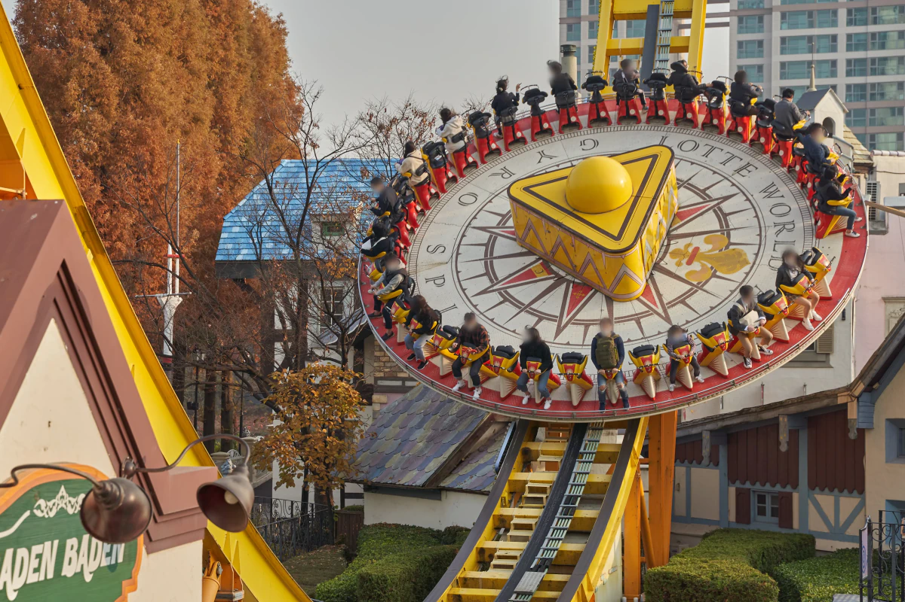
-
Atlantis
Schnelles Wasserfahrgeschäft mit plötzlicher Beschleunigung. Lotte World nennt eine maximale Startgeschwindigkeit von 72 km/h.
→ Eines der wichtigsten Pflichtfahrgeschäfte, wenn intensive Fahrgeschäfte ein Hauptgrund des Besuchs sind.
-
Comet Express
Dunkle Achterbahn mit rotierenden Fahrzeugen.
→ Großer Kandidat für einen Thrill-Tag und gut mit Atlantis in einem Magic-Island-Block kombinierbar. Aktuelle offizielle Angabe: ab 120 cm.
-
Gyro Swing
Großes kreisförmiges Fahrgeschäft, das sich dreht und dabei hoch ausschwingt.
→ Ohne schlechtes Gewissen auslassen, wenn starkes Drehen oder Höhe unangenehm sind. Aktuelle offizielle Angabe: 130–190 cm.
-
Gyro Drop
Drop Tower, der hoch hinauffährt und anschließend schnell absinkt.
→ Klare Wahl für Menschen, die Drop-Gefühl mögen – und einfache Ausschlussoption für alle anderen.
-
Gyro Spin
Großes kreisförmiges Fahrgeschäft mit Drehbewegung.
→ Besser für Besucher, die intensive Drehfahrgeschäfte lieber mögen als Achterbahnen.
-
Fantasy Dream
Ruhigerer Mini-Zug durch eine Fantasiewelt.
→ Gute Tempoänderung für Familien und Nicht-Thrill-Fahrer.
-
Petit Beep Beep
Kleines Auto-Fahrgeschäft für jüngere Kinder nahe dem See.
→ Gibt Familien mit kleinen Kindern einen Grund, Magic Island in den Tag einzubauen.
-
Moonboat
Separat kostenpflichtiges Bootserlebnis auf dem See für Paare oder Familien.
→ Als zusätzliches kostenpflichtiges Erlebnis behandeln, nicht als automatisch im Eintritt enthaltenes Standardfahrgeschäft.
Adventure — Fahrgeschäfte im Innenbereich
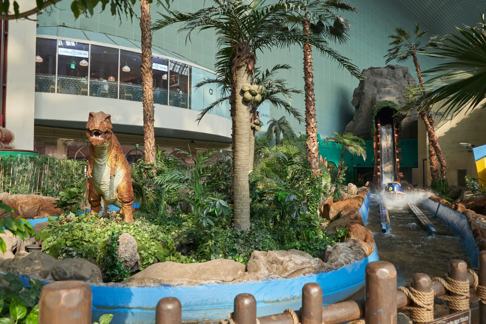
-
French Revolution
Schnelle Indoor-Achterbahn mit engen Kurven.
→ Eine besonders relevante Thrill-Option im Innenbereich und weniger abhängig vom Wetter auf Magic Island.
-
The Conquistador
Großes, steil ausschwingendes Fahrgeschäft im Stil eines Piratenschiffs.
→ Gute Option für Menschen, die Achterbahnen nicht mögen, aber trotzdem ein deutliches Thrill-Erlebnis wollen.
-
Flume Ride
Log-Flume-Wasserfahrt durch Dschungel- und Dinosaurierkulissen.
→ Guter Mittelweg zwischen sanften Familienattraktionen und großen Thrill-Rides. Aktuelle offizielle Angabe: ab 110 cm.
-
The Adventure of Sindbad
Boots-Dark-Ride durch eine unterirdische Sindbad-Welt.
→ Gute Familienoption, wenn große Thrill-Rides nicht das Ziel sind. Aktuelle offizielle Angabe: ab 110 cm.
-
Camelot Carrousel
Klassisches Karussell.
→ Funktioniert für jüngere Kinder, Familien und alle, die eine ruhigere Pause möchten.
-
PUBG World Agent
Interaktive PUBG-Themenattraktion.
→ Besser für Besucher, die spielerische Teilnahme statt eines klassischen Fahrgeschäfts möchten. Aktuelle offizielle Angabe: ab 130 cm.
-
3D Desperados 2
3D-Schießattraktion im Western-Thema.
→ Gut für Gruppen, die zwischen Fahrgeschäften eine kompetitive Indoor-Aktivität möchten.
-
Bumper Car — Adventure
Indoor-Autoscooter.
→ Einfache gruppenfreundliche Option ohne Achterbahnpräferenz.
-
Balloon Ride
Langsame Fahrt in der Höhe über dem Adventure-Innenpark.
→ Gut für Nicht-Thrill-Fahrer oder alle, die den Innenpark von oben sehen möchten.
-
World Monorail
Ruhige erhöhte Monorail durch Teile von Adventure.
→ Niedrige Belastung, um den Park zu sehen und gleichzeitig die Beine zu entlasten.
-
Pharaoh's Fury
Indoor-Motion-Dark-Ride rund um ein Pharaonen-Schatzabenteuer.
→ Praktische Indoor-Alternative, wenn Outdoor-Betrieb weniger verlässlich wird.
-
Across Dark
Indoor-Attraktion mit Weltraum- und Ruinenthema.
→ Vor Aufnahme in die Pflichtfahrgeschäft-Liste prüfen, ob die Attraktion am Besuchstag tatsächlich fährt.
Underland — Indoor-Abenteuer
-
Wild Wing
Motion-Attraktion, die das Fliegen durch starken Wind simuliert.
→ Passend für Besucher, die Bewegung und Effekte möchten, ohne eine klassische Achterbahn zu wählen.
-
Wild Jungle
Themenfahrt in einem Jeep-artigen Fahrzeug durch antike Ruinenkulisse.
→ Besser für Familien, denen thematische Erkundung wichtiger ist als hohe Intensität.
-
Wild Valley
Wasserbasiertes Abenteuer durch Höhlen und Wildwasser-artige Kulissen.
→ Familienoption mit mehr Bewegung als eine rein ruhige Aussichtsfahrt.
-
4D Shooting Theater
4D-Schießattraktion mit interaktiven Waffen.
→ Gut für Gruppen, die ein spielartiges Erlebnis statt einer weiteren Fahrgeschäftsschlange wollen.
-
Dream Boat
Ruhige Bootsfahrt durch einen märchenhaften Wald.
→ Eine der einfacheren Underland-Optionen für Familien mit jüngeren Kindern.
Kiddie Zone — jüngere Kinder
-
Kids Bumper Car
Autoscooter für Kinder.
→ Aktuelle offizielle Angabe: 110–125 cm. Zuerst die Größe des Kindes prüfen.
-
Undersea Kingdom
Unterwasser-Themen-Spielbereich für kleine Kinder.
→ Für kleine Kinder kann das wertvoller sein, als den Tag um berühmte Achterbahnen zu bauen, die sie nicht fahren dürfen.
-
Jumping Fish
Kinderfahrgeschäft, das sich dreht und auf und ab bewegt.
→ Passend für Kinder, die Bewegung möchten, aber noch nicht für intensivere Attraktionen bereit sind.
-
Eureka
Kinderfahrgeschäft mit kleinen Fahrzeugen, die sich anheben und drehen.
→ Nützliche kurze Fahrt in einem auf jüngere Kinder ausgerichteten Block.
-
Magic Boong Boong Car
Buntes kleines Autofahrgeschäft für Kinder.
→ Gut als Teil eines kürzeren Fahrgeschäftsblocks für kleine Kinder.
-
Brother Moon & Sister Sun
Kinderfahrgeschäft nach einer koreanischen Volkserzählung mit Auf-und-Ab-Bewegung.
→ Eine Stufe über einfachen Spielbereichen, ohne schon in großen Thrill überzugehen.
-
Children's Story Theater
Kindertheater mit Zauber- oder Musical-artigen Aufführungen.
→ Nützliche Möglichkeit, das Erlebnis fortzusetzen und gleichzeitig eine Pause von Warteschlangen und Fahrgeschäften zu geben.
Fahrgeschäfte nach Reisetyp auswählen
Es ist nicht nötig, jede Attraktion einzeln miteinander zu vergleichen.
Mit der Art von Tag beginnen, die tatsächlich gewünscht ist, und die Liste danach verkürzen.
Wenn die größten Thrills gewünscht sind
Start mit:
- Atlantis
- Comet Express
- French Revolution
- Gyro Swing
- Gyro Drop
Diese Fahrgeschäfte prägen am ehesten einen thrill-orientierten Lotte-World-Tag.
Wenn Atlantis und Comet Express hohe Priorität haben, Magic Island ernsthaft einplanen. Bei schlechtem Wetter bietet French Revolution eine große Indoor-Thrill-Option.
Es müssen nicht alle fünf zu Pflichtfahrgeschäften werden. Die drei wichtigsten wählen. Die anderen werden Bonus, wenn die Warteschlangen mitspielen.
Familien mit kleinen Kindern
Start mit:
- Kids Bumper Car
- Undersea Kingdom
- Jumping Fish
- Eureka
- Magic Boong Boong Car
- Children's Story Theater
Sanftere Familienfahrgeschäfte wie Camelot Carrousel oder Balloon Ride ergänzen, wenn sie zum Kind passen.
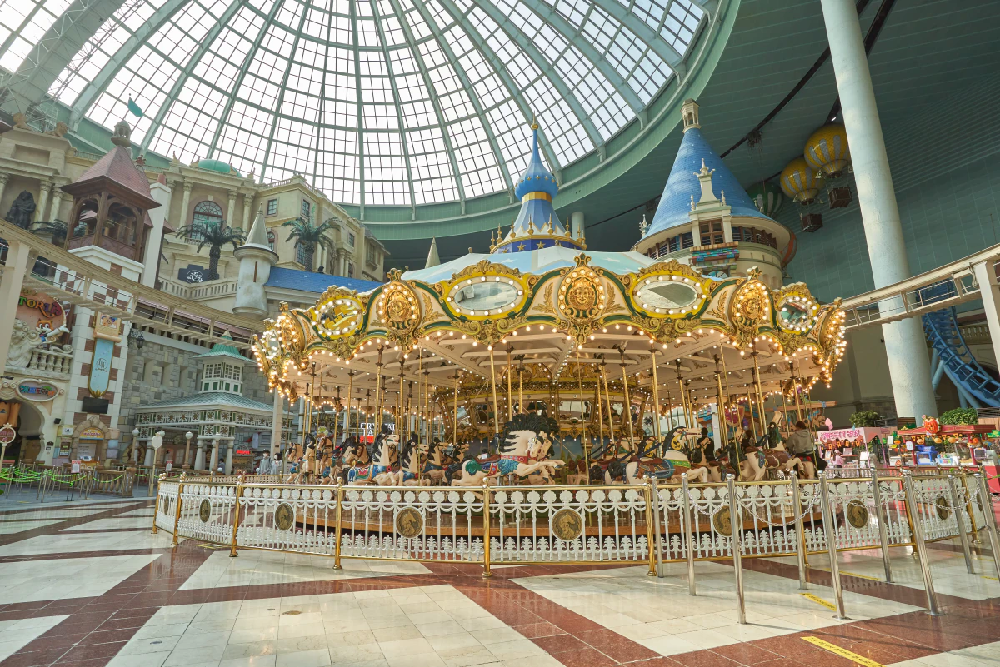
Nicht mit einer Liste berühmter Fahrgeschäfte beginnen und erst vor Ort feststellen, dass das Kind zu klein ist.
Zuerst Größenbeschränkungen prüfen. Dann den Tag um die Attraktionen bauen, die das jüngste Kind tatsächlich nutzen kann.
Für diese Gruppe kann ein guter Tag aus weniger bekannten Fahrgeschäften, mehr kurzen Fahrten, Shows und Pausen bestehen.
Ältere Kinder und Jugendliche
Eine Familie mit älteren Kindern oder Teenagern kann intensivere Fahrgeschäfte und gruppenfreundliche Attraktionen leichter kombinieren.
Gute Kandidaten:
- Atlantis
- Comet Express
- French Revolution
- Flume Ride
- The Adventure of Sindbad
- Bumper Car
- 3D Desperados 2
Diese Gruppe hat mehr Flexibilität als Familien mit kleinen Kindern. Sie muss den Tag trotzdem nicht in einen Thrill-Marathon verwandeln.
Jede Person wählt ein oder zwei Prioritäten. Dann nach Überschneidungen suchen.
Wenn große Drops oder starkes Drehen nicht gefallen
Lotte World kann trotzdem passen.
Ansehen:
- Balloon Ride
- World Monorail
- Camelot Carrousel
- The Adventure of Sindbad
- Fantasy Dream
- Dream Boat
- Children's Story Theater
Interaktive Attraktionen wie 3D Desperados 2 oder 4D Shooting Theater können zusätzlich mehr Aktivität bieten, ohne sich auf eine große Achterbahn festzulegen.
Eine fremde „beste Fahrgeschäfte“-Liste sollte niemanden überzeugen, den Tag auf Attraktionen zu verbringen, von denen bereits vorher bekannt ist, dass sie nicht gefallen.
Regen- oder Schlechtwetter-Optionen
Wenn Magic Island weniger verlässlich wird, den Fokus nach drinnen verschieben.
Nützliche Optionen:
- French Revolution
- Flume Ride
- Pharaoh's Fury
- The Adventure of Sindbad
- Wild Jungle
- Wild Valley
- 3D Desperados 2
- Balloon Ride
Schlechtes Wetter bedeutet nicht, dass Lotte World aufgegeben werden muss.
Es bedeutet nur, dass ein Plan rund um Atlantis, Gyro Swing und andere Outdoor-Prioritäten schnell angepasst werden muss.
Zuerst die 3–5 Pflichtfahrgeschäfte festlegen
Bevor Magic-Pass-Stufen verglichen oder der ganze Park optimiert wird, 3–5 Fahrgeschäfte auswählen, deren Auslassen wirklich enttäuschen würde.
Das ist der einfachste Schutz davor, dass lange Warteschlangen den ganzen Tag kontrollieren.
Die Liste muss nicht mit irgendeiner „Top 10 der besten Lotte-World-Fahrgeschäfte“ übereinstimmen. Thrill-Fan, Familie mit kleinen Kindern und jemand, der vor allem für Fotos kommt, sollten nicht dieselben Prioritäten haben.
Mit drei Kategorien beginnen
Mit drei Kategorien beginnen:
Pflichtfahrgeschäft
Dafür würde man eine lange Wartezeit akzeptieren oder den restlichen Zeitplan verändern.
Wunschfahrgeschäft
Soll gern gefahren werden, aber nur wenn die Wartezeit in den Tag passt.
Bonus
Wird gefahren, wenn der Zeitpunkt gut passt. Dafür wird der Tag nicht umgebaut.
Nur die erste Gruppe steuert die Route.
Die Liste der Pflichtfahrgeschäfte kurz halten
Drei Prioritäten sind bequem.
Fünf sind weiterhin machbar.
Sobald sieben oder acht Fahrgeschäfte „unbedingt“ werden, gibt es keine Prioritäten mehr. Dann existiert eine Checkliste, die davon abhängt, dass jede Warteschlange mitspielt.
Genau dann beginnt eine einzige 90-minütige Wartezeit, Mahlzeiten, Pausen und andere Fahrgeschäfte immer weiter nach hinten zu schieben.
Für die eigene Gruppe wählen – nicht fürs Internet
Ein berühmtes Fahrgeschäft ist nicht automatisch schützenswert.
Thrill-orientierte Besucher können den Tag um Atlantis, Comet Express oder French Revolution bauen.
Familien mit jüngeren Kindern können nach Prüfung der Größenbeschränkungen eine völlig andere Liste haben.
Wer intensive Fahrgeschäfte nicht mag, kann entscheiden, dass Shows, sanftere Attraktionen und Atmosphäre wichtiger sind als jede bekannte Achterbahn.
Die richtige Liste ist diejenige, mit der sich der eigene Besuch erfolgreich anfühlt.
Prüfen, wo die Prioritäten liegen
Nach Auswahl der 3–5 Fahrgeschäfte markieren, ob sie in Adventure oder auf Magic Island liegen.
Wenn die meisten auf Magic Island liegen, spricht das stark dafür, dem Außenbereich früh Zeit zu geben – besonders bei unsicherem Wetter.
Wenn die meisten drinnen liegen, gibt es wenig Grund, nach draußen zu hetzen, nur weil Outdoor-Thrill-Rides in jeder „beste Fahrgeschäfte“-Liste auftauchen.
Die Fahrgeschäftsliste bestimmt die Route – nicht umgekehrt.
Eine Ausweichoption einplanen
Mindestens eine Priorität sollte einen brauchbaren Ersatz haben.
Ein Outdoor-Fahrgeschäft kann wegen Wetter stoppen. Eine Hauptattraktion kann vorübergehend schließen. Eine Warteschlange kann plötzlich viel länger werden.
Wenn jedes Fahrgeschäft der Liste unverhandelbar ist, gibt es keinen Raum zur Anpassung.
Besser:
3–5 geschützte Prioritäten + mehrere flexible Alternativen.
Jetzt ist der richtige Moment, über Magic Pass nachzudenken
Magic Pass nicht nur kaufen, weil Lotte World voll sein kann.
Zuerst fragen:
- Welche Fahrgeschäfte sind mir wirklich wichtig?
- Welche davon sind für Magic Pass berechtigt?
- Welche Magic-Pass-Stufe deckt sie ab?
- Wie viel Zeit könnte ich realistisch sparen?
- Ist diese Zeit den Aufpreis für meine Gruppe wert?
Deshalb kommt die Fahrgeschäftsliste vor dem Pass.
Zuerst Fahrgeschäfte wählen. Danach Magic Pass wählen.
Die Realität der Warteschlangen in Lotte World
Der größte Fehler ist anzunehmen, man könne erst im Park spontan entscheiden, was gefahren wird.
Beliebte Attraktionen können selbst an Wochentagen eine Stunde oder länger Wartezeit aufbauen.
An vollen Tagen kann es deutlich mehr werden.
Das verändert die Planung. Eine 90-minütige Warteschlange sind nicht nur 90 Minuten. Hinzu kommen Fußweg zur Attraktion, Fahrt selbst, Orientierung zum nächsten Ziel, Mahlzeiten und Pausen. Eine einzige Entscheidung kann dadurch einen großen Teil des Tages verbrauchen.
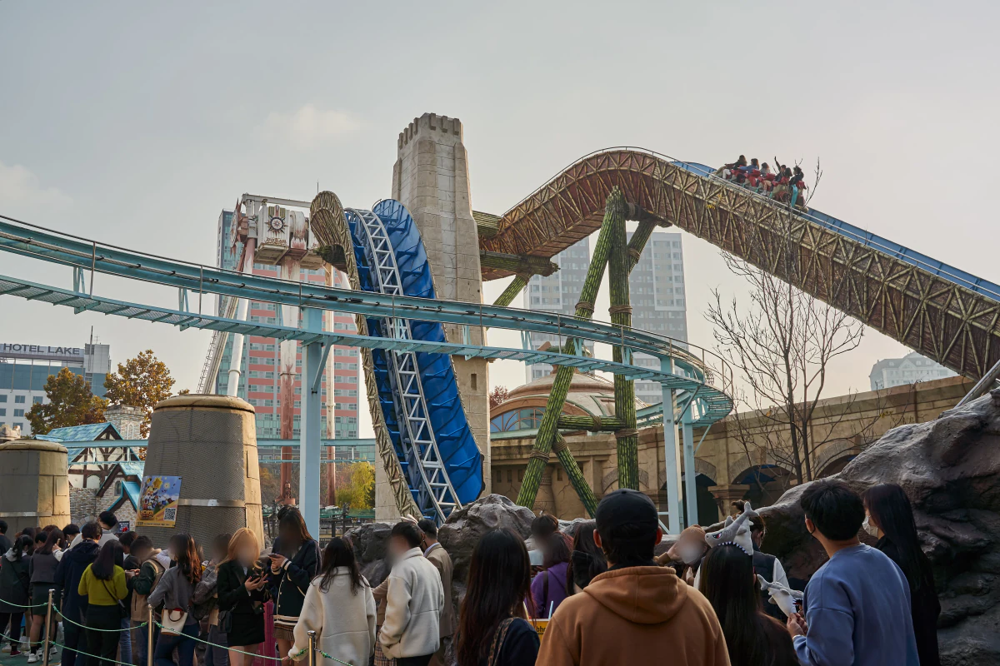
Ein Wochentag garantiert keine kurzen Schlangen
Wochentage sind im Allgemeinen eine bessere Chance als Wochenenden und große Feiertage. Sie garantieren trotzdem keine kurzen Wartezeiten.
Aktuelle Besucherberichte nennen bei mehreren großen Fahrgeschäften auch werktags Wartezeiten von mehr als 60 Minuten.
Darum keinen Plan bauen, der nur funktioniert, wenn der Park ruhig ist.
Einen Plan bauen, der auch funktioniert, wenn er voll ist.
Vor der Ankunft entscheiden, wofür Warten akzeptabel ist
Nicht jedes beliebte Fahrgeschäft verdient gleich viel Zeit.
Wenn Atlantis einer der Hauptgründe des Besuchs ist, kann eine lange Warteschlange ein akzeptabler Tausch sein.
Wenn ein anderes Fahrgeschäft nur „ganz nett“ wäre, kann dieselbe Wartezeit Grund genug sein weiterzugehen.
Diese Unterscheidung sollte getroffen werden, bevor man vor einer Anzeige mit 90 Minuten steht.
Frage:
Für welche Fahrgeschäfte würde ich auch dann noch anstehen, wenn die Wartezeit eine Stunde beträgt?
Das sind die echten Prioritäten.
Alles andere sollte leichter streichbar sein.
Einen Punkt festlegen, an dem man weitergeht
Es braucht keine universelle Wartezeitregel für jedes Fahrgeschäft.
Aber es braucht Grenzen.
Bei einem Pflichtfahrgeschäft kann eine lange normale Warteschlange akzeptabel sein.
Bei einem Fahrgeschäft zweiter Priorität kann dieselbe Zeit zu teuer für den Tag sein.
Wichtig ist, diese Grenze vorher zu setzen.
Sobald jedes Fahrgeschäft zu „jetzt sind wir schon so weit gekommen, dann warten wir eben“ wird, kann Lotte World zu einem Tag des Anstehens statt Fahrens werden.
Nicht jedem berühmten Fahrgeschäft hinterherjagen
Eine Liste der bekanntesten Fahrgeschäfte ist leicht zu finden.
Alle abzuarbeiten ist ein anderes Problem.
Je mehr Hauptattraktionen unverhandelbar werden, desto stärker hängt der gesamte Tagesplan von Warteschlangen ab, die niemand kontrollieren kann.
Für die meisten Besucher ist besser:
3–5 Fahrgeschäfte, die wirklich wichtig sind. Alles andere ist Bonus.
So bleibt Raum für: eine Mahlzeit eine Pause schlechtes Wetter eine vorübergehende Schließung eine spontane Änderung des Plans
Eine lange Warteschlange sollte den Plan verändern – nicht zerstören
Wenn eine Priorität plötzlich extrem lange Wartezeit zeigt, gibt es mehrere Möglichkeiten:
- warten, weil es wirklich ein Pflichtfahrgeschäft ist
- zu einer anderen Priorität gehen und später erneut prüfen
- Magic Pass nutzen, wenn Fahrgeschäft und Pass berechtigt sind
- durch eine Indoor- oder kürzer wartende Alternative ersetzen
- komplett auslassen
Ein ausgelassenes Fahrgeschäft ist kein gescheiterter Tag.
Einen halben Nachmittag für ein Fahrgeschäft zu schützen, das gar nicht besonders wichtig war, ist der größere Fehler.
Der nächste Schritt ist deshalb nicht eine längere Fahrgeschäftsliste.
Sondern die 3–5 Fahrgeschäfte auszuwählen, für die der Tag wirklich geschützt werden soll.
Fahrgeschäftsstrategie: Prioritäten schützen, die sich später schwer nachholen lassen
Es gibt keine einzelne „beste Reihenfolge“, die für jeden in Lotte World funktioniert.
Priorität haben sollten Attraktionen, die persönlich wichtig sind und die später schwer nachzuholen wären, wenn Warteschlange, Wetter oder ein vorübergehender Betriebsstopp dazwischenkommt.
Das ist meist wichtiger als eine fremde Top-10-Rangliste.
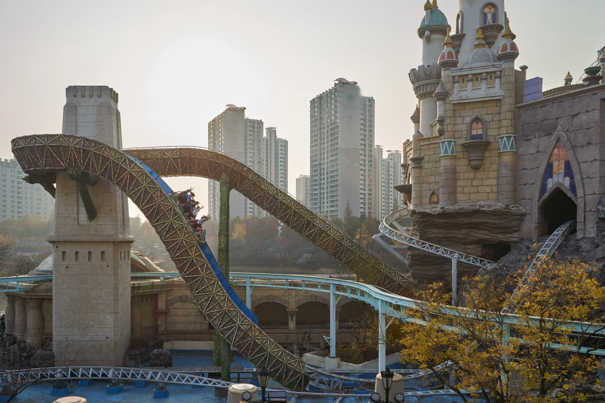
Wenn Thrill-Rides der Hauptgrund für den Besuch sind
Wenn Atlantis, Comet Express oder die Gyro-Fahrgeschäfte Pflichtfahrgeschäfte sind, verdient Magic Island bei geeignetem Wetter früh ernsthafte Aufmerksamkeit.
Atlantis und Comet Express liegen beide auf Magic Island. Wer beide wichtig findet, kann einen großen Teil des Thrill-Plans in einem Block schützen, ohne wiederholt zurück nach Adventure zu laufen.
Der Fehler wäre, den ersten Morgenabschnitt mit unwichtigen Attraktionen zu verbringen, nur weil deren Warteschlangen kurz aussehen, und erst danach zu den echten Pflichtfahrgeschäfte zu kommen, wenn die Hauptwartezeiten bereits aufgebaut sind.
Eine kurze Warteschlange ist nur dann gutes Preis-Leistungs-Verhältnis, wenn das Fahrgeschäft wirklich interessiert.
Bei unsicherem Wetter eine Indoor-Priorität bereithalten
French Revolution bietet Thrill-Fans eine große Indoor-Priorität in Adventure.
Andere Indoor-Attraktionen wie Flume Ride und Pharaoh's Fury können ebenfalls Alternativen sein, wenn Magic Island weniger verlässlich läuft.
Das bedeutet nicht, dass Indoor-Fahrgeschäfte kurze Schlangen haben.
Es bedeutet, dass schlechtes Wetter nicht bedeutet, keinen Plan mehr zu haben.
Fahrgeschäften Rollen geben statt den ganzen Park zu ranken
Es braucht keine weitere generische Top-10-Liste.
Besser in Rollen denken:
Große Thrill-Attraktion im Freien: Atlantis
Outdoor-Achterbahnblock: Comet Express
starkes Drehen / Drop: Gyro Swing / Gyro Drop
Thrill-Alternative drinnen: French Revolution
Familie / mittlere Intensität: Flume Ride
Themen-Alternative drinnen: Pharaoh's Fury
Wer intensive Fahrgeschäfte nicht mag, sollte Atlantis nicht schützen, nur weil es berühmt ist. Eine Familie kann nach Größenprüfung mehrere dieser Attraktionen komplett streichen.
Der Punkt ist, jedem Fahrgeschäft eine Aufgabe im eigenen Plan zu geben.
Die ersten zwei Stunden sollten etwas Wichtiges schützen
Die 3–5 Pflichtfahrgeschäfte ansehen und fragen: Welches wäre am schwersten nachzuholen, wenn ich es verschiebe?
Wenn mehrere Prioritäten auf Magic Island liegen und das Wetter stabil aussieht, kann ein Outdoor-Block früh am Tag sinnvoll sein.
Wenn die Prioritäten überwiegend in Adventure liegen oder die Outdoor-Prognose schlecht ist, kann ein Start drinnen besser sein.
Nicht quer durch den Park laufen, nur weil eine andere Attraktion kurzfristig eine kürzere Wartezeit anzeigt.
Zuerst den Plan schützen. Danach Lücken füllen.
Magic Pass bewusst einsetzen
Bei mehreren großen Attraktionen – darunter Atlantis, Comet Express, French Revolution, Flume Ride und Pharaoh's Fury – kann Magic Pass nicht mehrfach für dasselbe Fahrgeschäft verwendet werden. Der Einsatz ist auf einmal pro Attraktion begrenzt.
Dadurch wird die Entscheidung wichtiger.
Wenn eines dieser Fahrgeschäfte ein Pflichtfahrgeschäft ist, den Pass dort verwenden, weil die Zeitersparnis für genau diese Priorität wertvoll ist – nicht nur weil man gerade danebensteht.
Die aktuellen Magic-Pass-Stufen folgen im nächsten Abschnitt.
Bis dahin bleibt dieselbe Regel:
Das Fahrgeschäft soll den Pass rechtfertigen. Der Pass soll nicht entscheiden, was gefahren wird.
Magic Pass 2026: Lohnt er sich, und welche Stufe solltest du kaufen?
Magic Pass kann in Lotte World sehr viel Wartezeit sparen. Ohne Abgleich mit den eigenen Pflichtfahrgeschäfte kann der Kauf aber ein teurer Fehler sein.
2026 ist Magic Pass nicht mehr nur die Wahl zwischen „ein paar priorisierte Zugänge“ und „mehr priorisierte Zugänge“. Das aktuelle System hat vier verschiedene 5-Nutzungen-Stufen, und die berechtigten Attraktionen unterscheiden sich je nach Stufe.
Darum lautet die Regel dieses Guides:
Zuerst Fahrgeschäfte wählen. Danach Magic Pass wählen.
Aktuelle Magic-Pass-Preise
Geprüft: 15. September 2026
Light — ₩54,000
5 Nutzungen. Nur hier beginnen, wenn die eigenen Prioritäten in die günstigere Gruppe berechtigter Fahrgeschäfte fallen.
Standard A — ₩65,000
5 Nutzungen. Relevanter, wenn Atlantis / Flume Ride / Gyro Swing-artige Prioritäten wichtig sind.
Standard B — ₩65,000
5 Nutzungen. Relevanter, wenn Comet Express / French Revolution-artige Prioritäten wichtiger sind.
Premium — ₩80,000
5 Nutzungen. Breitere Abdeckung für Reisende, deren Prioritäten über mehrere Fahrgeschäftsgruppen verteilt sind.
Premium nicht allein deshalb wählen, weil es die breiteste Abdeckung hat.
Wenn die drei Fahrgeschäfte, die wirklich interessieren, bereits von Standard A oder Standard B abgedeckt werden, bringt der Aufpreis für weitere berechtigte Attraktionen, die wahrscheinlich gar nicht genutzt werden, kaum zusätzlichen Wert.
Die genaue Attraktionsliste kann sich ändern. Vor dem Kauf die aktuelle Liste in der offiziellen Lotte World App prüfen.
Standard A vs. Standard B ist eine Fahrgeschäftsentscheidung – keine Qualitätsentscheidung
Standard A und Standard B kosten aktuell gleich viel.
Keines ist automatisch besser.
Wenn Atlantis und Gyro Swing weit oben stehen, passt Standard A wahrscheinlich besser.
Wenn Comet Express und French Revolution wichtiger sind, ist Standard B der relevantere Ausgangspunkt.
Genau deshalb ist der Kauf eines Magic Pass vor der Auswahl der Pflichtfahrgeschäfte die falsche Reihenfolge.
Wann Magic Pass am ehesten den Aufpreis wert ist
Magic Pass lässt sich leichter rechtfertigen, wenn mehrere dieser Punkte zutreffen:
- Besuch an einem vollen Tag
- Pflichtfahrgeschäfte haben regelmäßig lange Warteschlangen
- nur ein Tag in Lotte World verfügbar
- After4-Ticket und dadurch deutlich weniger Zeit
- die Gruppe legt großen Wert auf bestimmte Hauptattraktionen
- mehr Geld ist akzeptabler als mehrere Stunden Anstehen
- die ausgewählten Fahrgeschäfte passen tatsächlich zur gekauften Stufe
Den Kauf als Zurückkaufen von Zeit verstehen – nicht als Kauf von fünf Fahrgeschäften.
Wenn zwei oder drei lange Warteschlangen vermieden werden und dadurch noch ein großes Fahrgeschäft, eine richtige Mahlzeit, eine Pause mit Kindern oder schlicht ein weniger erschöpfender Tag möglich wird, kann Magic Pass persönlich deutlich mehr wert sein als sein Nennpreis.
Wann er wahrscheinlich nicht nötig ist
Magic Pass ist nicht automatisch gutes Preis-Leistungs-Verhältnis, nur weil Lotte World voll sein kann.
Eher auslassen, wenn:
- bei Öffnung angekommen und den ganzen Tag geblieben wird
- die Fahrgeschäftsprioritäten flexibel sind
- der Besuch hauptsächlich sanften Attraktionen, Shows, Fotos oder Atmosphäre gilt
- jüngere Kinder viele berechtigte Hauptattraktionen ohnehin nicht nutzen können
- es okay ist, ein Fahrgeschäft bei zu langer Warteschlange zu streichen
- schlechtes Wetter mehrere Outdoor-Prioritäten unsicher macht
Eine Familie, die mehrere Magic Passes kauft, kann dem Tag erhebliche Zusatzkosten hinzufügen.
Vor dem Kauf für jede Person prüfen, ob sie die Fahrgeschäfte, die den Pass rechtfertigen, überhaupt fahren kann und tatsächlich fahren möchte.
Magic Pass bedeutet nicht null Wartezeit
Magic Pass gibt Zugang zu einer separaten Prioritätsschlange.
Er garantiert nicht, dass jedes Fahrgeschäft ohne Warten sofort betreten wird.
Lotte World weist darauf hin, dass je nach Auslastung der Attraktion weiterhin Wartezeit entstehen kann. Vorübergehende Schließungen, Sicherheitsprüfungen, geschlossene Warteschlangen und schlechtes Wetter können die Nutzung ebenfalls verhindern oder verzögern.
Das gilt besonders auf Magic Island.
Bezahlter Prioritätszugang macht eine Outdoor-Attraktion nicht immun gegen Wind oder Regen.
Manche große Fahrgeschäfte können mit Magic Pass nicht wiederholt werden
Bei mehreren großen Attraktionen kann Magic Pass nur einmal auf derselben Attraktion verwendet werden.
Aktuelle Einschränkungen betreffen:
- Atlantis
- Comet Express
- French Revolution
- Flume Ride
- The Fury of the Pharaoh
Daher nicht planen, alle fünf Magic-Pass-Nutzungen mehrfach auf das persönliche persönliche Lieblingsfahrgeschäft zu setzen.
Es gibt außerdem Attraktionen und kostenpflichtige Einrichtungen, bei denen Magic Pass überhaupt nicht verwendet werden kann.
Vor dem Kauf erneut die aktuelle Liste berechtigter Attraktionen prüfen.
So wird Magic Pass 2026 gekauft
Magic Pass ist vom normalen Lotte-World-Eintritt getrennt und wird über die offizielle Lotte World Adventure App verkauft.
Aktuelle Kaufregeln:
Premium-Vorverkauf
Premium kann derzeit ab 00:00 Uhr zwei Tage vor dem Besuch bis 23:59 Uhr am Vortag reserviert werden.
Kauf am selben Tag
Alle Magic-Pass-Stufen können derzeit am Besuchstag ab 08:30 Uhr über die App verkauft werden.
Die Mengen sind begrenzt. Magic Pass kann früh ausverkauft sein.
Wenn er wichtig für den Plan ist, nicht erst am Nachmittag ankommen und davon ausgehen, dass dann einfach einer gekauft werden kann.
Ein Magic Pass lässt sich nicht in der Gruppe aufteilen
Magic Pass ist für den einzelnen Nutzer.
Eine Person kann nicht einen einzigen 5-Nutzungen-Pass kaufen und die fünf Nutzungen auf fünf Familienmitglieder verteilen.
Lotte World begrenzt außerdem Käufe, und über ein Konto ausgegebene Tickets lassen sich nicht einfach zwischen anderen Personen übertragen oder aufteilen.
Bei Familie oder Gruppe die Gesamtkosten für alle Personen berechnen, die tatsächlich einen brauchen – nicht nur den Preis eines einzelnen Passes.
Diese Rechnung kann die Entscheidung schnell verändern.
Vorsicht beim Kauf am Besuchstag
Magic Pass ist ein begrenztes Produkt mit strengeren Stornierungsbedingungen als ein gewöhnlicher „später entscheiden“-Kauf.
Wetter, temporäre Attraktionsschließungen und Planänderungen garantieren nicht automatisch, dass nach Ablauf des Stornierungsfensters das Geld zurückkommt.
Vor dem Kauf prüfen:
- heutiges Wetter
- Attraktionsschließungen
- exakte Fahrgeschäftsliste der Stufe
- Größenbeschränkungen der Gruppe
- welche 3–5 Fahrgeschäfte tatsächlich wichtig sind
Dann kaufen.
Korea-Inside-Regel für Magic Pass
Nicht fragen:
„Lohnt sich Magic Pass?“
Fragen:
„Wie viele meiner Pflichtfahrgeschäfte schützt diese Stufe, und wie viel Zeit könnte ich damit realistisch sparen?“
Wenn die Antwort drei oder vier wirklich wichtige Fahrgeschäfte an einem vollen Tag lautet, kann der Aufpreis sinnvoll sein.
Wenn die Antwort ein wichtiges Fahrgeschäft plus vier Attraktionen, die ohnehin nicht gewählt worden wären lautet, das Geld behalten.
Das Fahrgeschäft soll den Pass rechtfertigen. Der Pass darf niemals das Fahrgeschäft bestimmen.
Lotte World mit Kindern: Energie managen, nicht Fahrgeschäftszahl
Lotte World kann für Familien sehr gut funktionieren. Ein Familientag sollte aber nicht wie ein Erwachsenen-Thrill-Plan mit kleineren Personen behandelt werden.
Die erste Frage lautet nicht:
„Wie viele Fahrgeschäfte schaffen wir?“
Sondern:
„Welche Fahrgeschäfte kann wirklich jeder nutzen, und wie lange können die Kinder den Park genießen, bevor Warteschlangen und Müdigkeit übernehmen?“
Größenbeschränkungen vor dem Magic-Pass-Kauf prüfen
Größenbeschränkungen können mehrere Hauptattraktionen aus dem realistischen Tagesplan eines Kindes entfernen.
Aktuelle Beispiele:
- Comet Express: ab 120 cm
- Gyro Swing: 130–190 cm
- Flume Ride: ab 110 cm
- Kids Bumper Car: 110–125 cm
- Children's Story Theater: keine Größenbeschränkung
Das verändert den Wert von Magic Pass.
Wenn ein Kind mehrere Attraktionen der geplanten Stufe nicht fahren kann, kann es wenig Sinn ergeben, denselben teuren Pass für jedes Familienmitglied zu kaufen.
Vor dem Kauf eine Familien-Fahrgeschäftsliste erstellen. Das kleinste Kind der Gruppe ist der erste Filter.
Danach fragen, ob die berechtigten Attraktionen wichtig genug für den Aufpreis sind.
Einen Familientag nicht nach Fahrgeschäftszahl beurteilen
Kinder erleben Warteschlangen anders als Erwachsene.
Eine 60-minütige Wartezeit gefolgt von einer weiteren langen Schlange kann für einen Erwachsenen auf Thrill-Maximierung noch akzeptabel sein. Für ein kleines Kind kann sie den restlichen Nachmittag in Schadensbegrenzung verwandeln.
Ein besserer Familienrhythmus ist oft:
Fahrgeschäft → kürzere Attraktion oder Show → Essen oder Getränk → nächstes Prioritätsfahrgeschäft → echte Pause
statt:
große Warteschlange → große Warteschlange → große Warteschlange
Ziel ist, genug Energie für die zweite Hälfte des Tages zu behalten.
Kiddie Zone nutzen, wenn sie ein echtes Problem löst
Adventure hat im ersten Stock eine eigene Kiddie Zone mit Attraktionen für jüngere Kinder.
Nützlich, wenn:
- ältere Familienmitglieder ein Thrill-Ride fahren wollen, das das jüngere Kind nicht nutzen kann
- das Wetter Magic Island weniger attraktiv macht
- das Kind etwas mit geringerer emotionaler und körperlicher Belastung braucht
- die Gruppe sich zurücksetzen muss, ohne den Park zu verlassen
Familien müssen trotzdem nicht den gesamten Besuch dort verbringen.
Besser einige Attraktionen wählen, auf die sich das Kind wirklich freut, und sie mit Pausen, Shows und Familienfahrgeschäften kombinieren.
Eine echte Pause einbauen, bevor das Kind danach verlangt
Wenn alle bereits erschöpft sind, kommt die Pause zu spät.
Mindestens einen Zeitraum planen, in dem niemand für eine große Attraktion anstehen muss.
Hinsetzen. Richtig essen. Toilette nutzen. Taschen neu organisieren. Prüfen, ob die ursprüngliche Fahrgeschäftsliste noch sinnvoll ist.
Wenn ein Kind bereits müde ist, verbessert eine weitere 70-minütige Warteschlange den Tag selten nur deshalb, weil sie „im Plan stand“.
Kinderwagen und Baby-Einrichtungen erleichtern den Park – sie beseitigen Müdigkeit nicht
Lotte World bietet Familienangebote wie: Kinderwagen-Service Still- bzw. Baby-Care-Räume Wickelmöglichkeiten Aufzüge
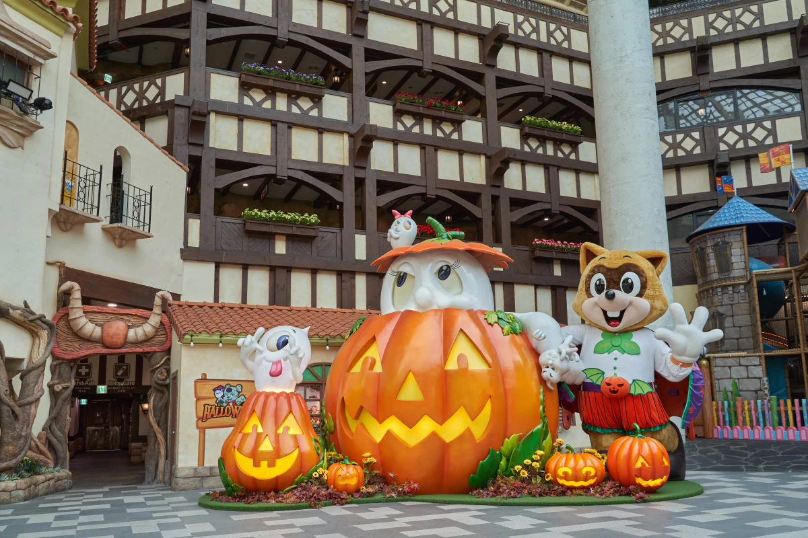
Diese Einrichtungen sind nützlich, besonders weil Adventure mehrere Ebenen hat.
Sie machen die Logistik leichter.
Sie verwandeln einen ganzen Freizeitparktag aber nicht in einen mühelosen Tag für kleine Kinder.
Ein Kinderwagen hilft beim Laufen. Er hilft nicht in jeder Warteschlange, bei Größenbeschränkungen oder in jeder vollen Verbindung zwischen Bereichen.
Eltern können unterschiedliche Prioritäten brauchen
Wenn Erwachsene große Thrill-Rides fahren möchten, die jüngere Kinder nicht nutzen können, vorher entscheiden:
- ein Erwachsener wartet beim Kind, während der andere fährt
- die Gruppe lässt das Fahrgeschäft aus
- Erwachsene trennen sich kurz und treffen sich an einem klaren Ort wieder
Diese Entscheidung nicht zum ersten Mal am Eingang einer 90-minütigen Warteschlange treffen.
Die offizielle Parkkarte enthält einen ausgewiesenen Treffpunkt. Vor einer Trennung einen Treffpunkt festzulegen, ist eine einfache Vorsichtsmaßnahme, die unnötigen Stress vermeiden kann.
Wissen, wann der Fahrgeschäftsplan beendet ist
Die ursprüngliche Liste muss nicht vollständig abgearbeitet werden.
Wenn Kinder bereits die Fahrgeschäfte hatten, die ihnen wichtig waren, gegessen, eine Show gesehen und den Park genossen haben, macht eine weitere berühmte Attraktion den Tag nicht automatisch besser.
Das gilt besonders, wenn danach auch noch Seoul Sky, Aquarium oder ein langer Spaziergang um Seokchon Lake erwogen werden.
Für Familien kann die beste Entscheidung sein, aufzuhören, solange der Tag noch gut läuft.
Ein erfolgreicher Familientag in Lotte World ist nicht die maximale Anzahl von Fahrgeschäften. Es sind die Fahrgeschäfte, die wichtig waren, ohne alle zu erschöpfen, um sie zu erreichen.
Wetter kann den Fahrgeschäftsplan verändern
Lotte World hat einen großen Indoor-Park. Das bedeutet nicht, dass Wetter egal ist.
Mehrere Headliner liegen auf Magic Island. Outdoor-Attraktionen können wegen Regen, starkem Wind, extremen Temperaturen oder anderen Bedingungen vor Ort den Betrieb aussetzen.
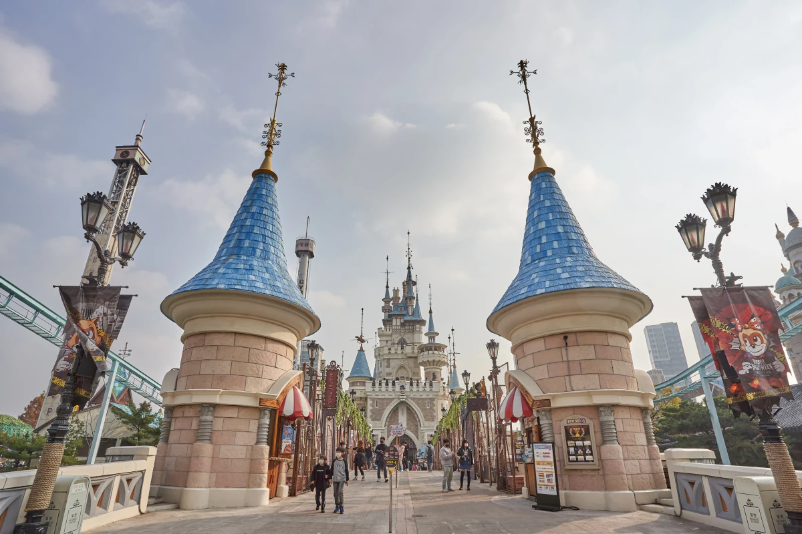
Wenn Atlantis, Comet Express oder ein anderes Outdoor-Fahrgeschäft zu den Pflichtfahrgeschäfte gehört und die Prognose instabil ist, es eher früh am Tag schützen statt bis zum Abend zu warten.
Wenn der Outdoor-Betrieb unterbrochen wird, den Fokus nach Adventure verschieben statt stundenlang darauf zu warten, dass Magic Island wieder öffnet.
Schlechtes Wetter zerstört keinen Lotte-World-Tag. Es kann aber einen Plan zerstören, der komplett von Outdoor-Fahrgeschäften abhängt.
Essen und Pause: die zweite Tageshälfte schützen
Nicht jede Pause zur nächsten Warteschlange machen.
Wenn der Vormittag bereits ein oder zwei lange Schlangen hatte, Mittagessen oder Nachmittagspause wirklich zum Zurücksetzen nutzen. Hinsetzen. Richtig essen. Getränke auffüllen. Prüfen, ob die ursprünglichen Prioritäten noch sinnvoll sind.
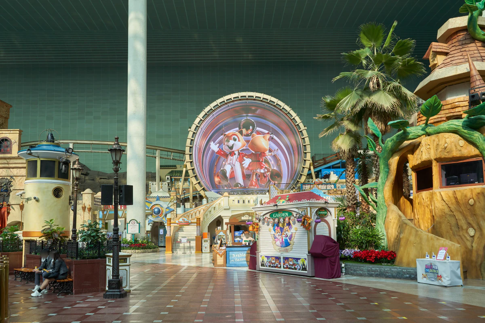
Ein berühmtes Restaurant oder Snack ist nicht automatisch noch eine lange Schlange wert, wenn der restliche Tag ohnehin unter Druck steht.
Für die meisten Besucher ist diese Regel besser:
Für wichtige Fahrgeschäfte anstehen. Beim Essen flexibel sein.
Mit Kindern eine echte Pause einplanen, bevor alle erschöpft sind. Bei Erwachsenen gilt dasselbe. Eine 30-minütige Pause kann die nächsten drei Stunden besser schützen als noch eine unwichtige Attraktion dazwischenzuschieben.
Lotte World ist einfacher zu genießen, wenn Mahlzeiten und Pausen Teil des Plans sind und nicht erst stattfinden, nachdem der Plan bereits zusammengebrochen ist.
Lohnt sich die Schuluniform-Erfahrung?
Eine koreanisch inspirierte Schuluniform zu mieten kann Spaß machen – besonders wenn Fotos und K-Culture-Erlebnis wichtig sind.
Sie kostet aber nicht nur Geld. Sie kostet auch Zeit.
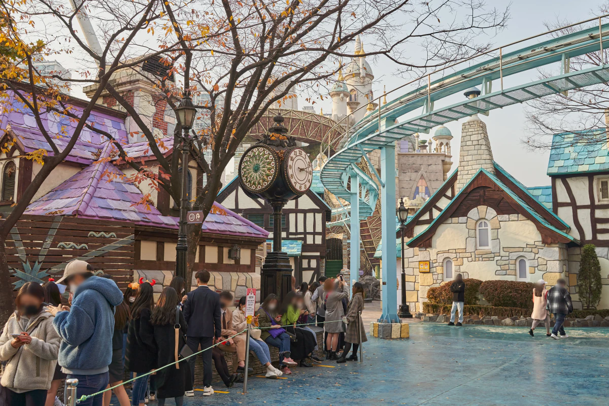
Outfit auswählen, umziehen, Sachen verstauen und Uniform später zurückgeben. An einem Tag, der bereits von Fahrgeschäftsschlangen dominiert wird, nimmt das Zeit von den Pflichtfahrgeschäfte.
Sinnvoll, wenn:
- Fotos einer der Hauptgründe des Besuchs sind
- mit Freunden oder als Paar besucht wird
- etwas Fahrgeschäftszeit bewusst gegen dieses Erlebnis getauscht wird
Auslassen, wenn:
- mehrere unverhandelbare Fahrgeschäfte bestehen
- ein After4-Ticket genutzt wird
- der Zeitplan bereits eng ist
- Umziehen und Fotografieren eher wie eine weitere Aufgabe als wie Spaß wirken
Die Uniform als Erlebnis behandeln. Nicht als automatische Lotte-World-Pflicht.
Anreise zu Lotte World
Lotte World Adventure ist direkt an den Bereich Jamsil angebunden und am einfachsten per U-Bahn erreichbar.
Mit Seoul Subway Linie 2 oder Linie 8 bis Jamsil Station fahren. Für Lotte World Adventure den Schildern Richtung Ausgang 3 / Lotte World folgen und nicht einfach allem folgen, auf dem „Lotte“ steht. Source-conflict note: Dieser Wortlaut folgt exakt der aktuellen englischen Lotte-World-Seite. Die separate Jamsil-Seite nennt für die Adventure-Seite Ausgang 4; keine der beiden Angaben wird in diesem Batch stillschweigend korrigiert.
Den Freizeitpark nicht mit Lotte World Tower verwechseln
Die Namen lassen sich leicht durcheinanderbringen.
Lotte World Adventure ist der Freizeitpark an 240 Olympic-ro.
Lotte World Tower und Mall liegen im gegenüberliegenden Teil des Komplexes an 300 Olympic-ro.
Wenn auf dem Ticket Lotte World Adventure steht, den Schildern zum Freizeitpark folgen – nicht zu Seoul Sky oder Lotte World Mall.
Anreise mit Gepäck
Wer direkt vom Flughafen kommt oder gerade das Hotel wechselt, sollte möglichst vermeiden, große Taschen durch den Park zu tragen.
Im Lotte-World-Komplex gibt es Gepäckschließfächer. Größe und Verfügbarkeit können aber variieren. Bei einem großen Koffer die Aufbewahrungsmöglichkeit vor der Ankunft prüfen und nicht davon ausgehen, dass jedes Schließfach passt. Beste Standardlösung:
Nur das mitnehmen, was für den Tag wirklich gebraucht wird. Lange Warteschlangen, Treppen und der Wechsel zwischen Adventure und Magic Island sind ohne Reisegepäck einfacher.
Was nicht mit einem vollen Lotte-World-Tag kombiniert werden sollte
Lotte World, Aquarium, Seoul Sky und Seokchon Lake liegen alle nah beieinander.
Das bedeutet nicht, dass sie in denselben Tag gehören.
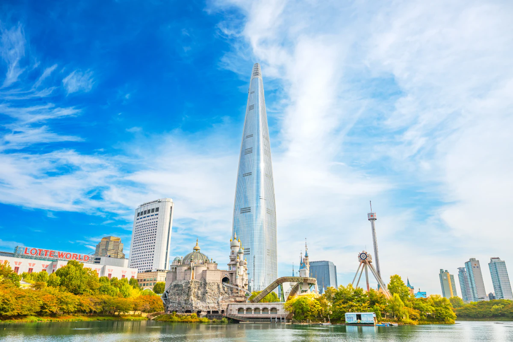
Wenn Fahrgeschäfte Priorität haben, Lotte World die notwendige Zeit geben. Lange Warteschlangen, Mahlzeiten, Pausen und der Wechsel zwischen Adventure und Magic Island können bereits den größten Teil des Tages füllen.
Lotte World + Aquarium
Diese Kombination kann funktionieren, wenn Lotte World nur ein Teil des Tages ist oder wenn mit Kindern mehr Abwechslung statt maximale Fahrgeschäftszahl gewünscht ist.
Als Standard für einen vollen fahrgeschäftsorientierten Lotte-World-Tag ist sie schwach.
Lotte World + Seoul Sky
Möglich – aber nur, wenn es okay ist, Lotte World zu verlassen, bevor die Fahrgeschäftsliste ausgeschöpft ist.
Seoul Sky nicht nur deshalb ergänzen, weil es direkt daneben liegt.
Seokchon Lake
Ein kurzer Spaziergang kann vor oder nach Lotte World eine angenehme Pause sein.
Ein kompletter Rundgang ist eine andere Aktivität und braucht eigene Zeit.
Die bessere Regel
Wenn Lotte World der Hauptgrund für Jamsil ist: Dem Park den Tag geben.
Nur dann etwas ergänzen, wenn der Lotte-World-Plan früher als erwartet abgeschlossen ist.
Nah beieinander bedeutet nicht, dass es in denselben Reiseplan gehört.
Lotte World buchen: Vor der Zahlung den Onlinepreis prüfen
Lotte World veröffentlicht reguläre Eintrittspreise. Das bedeutet nicht, dass immer der volle offizielle Preis gezahlt werden muss.
Online-Attraktionsplattformen verkaufen Lotte-World-Eintritt häufig ungefähr 20–30 % günstiger als den regulären Preis. Bei Aktionen können größere Rabatte vorkommen.
Preise ändern sich je nach Datum und Angebot. Vor der Buchung den aktuellen Preis vergleichen.
Vor der Zahlung prüfen:
- 1Day oder After4
- was enthalten ist
- gültiges Besuchsdatum
- Stornierungs- und Erstattungsbedingungen
- reiner Eintritt oder Paket
Magic Pass ist vom normalen Eintritt getrennt, sofern das Produkt nicht ausdrücklich etwas anderes sagt.
Den aktuellen Lotte-World-Ticketpreis prüfen
Wenn das Besuchsdatum bereits feststeht, den aktuellen Trip.com-Preis vor dem Kauf mit dem regulären Lotte-World-Preis vergleichen.
Lotte World Adventure Tickets bei Trip.com prüfen
Preise und Aktionen können sich ändern. Es gilt der Preis, der zum Kaufzeitpunkt auf der Buchungsseite angezeigt wird.
Lotte World Seoul FAQ
Reicht ein Tag für Lotte World Seoul?
Ja. Für die meisten Besucher reicht ein voller Tag für ein gutes Lotte-World-Erlebnis. Das bedeutet nicht automatisch, dass jedes Fahrgeschäft geschafft wird. Lange Warteschlangen können schnell reduzieren, wie viele große Attraktionen tatsächlich möglich sind. Darum zuerst 3–5 Pflichtfahrgeschäfte auswählen.
Lohnt sich After4?
After4 kann gutes Preis-Leistungs-Verhältnis bieten, wenn ein kürzerer Abendbesuch gewünscht ist, nur wenige Fahrgeschäftsprioritäten bestehen oder Atmosphäre genauso wichtig ist wie die Zahl der Fahrgeschäfte.
Wenn dies der einzige Besuch ist und mehrere große Fahrgeschäfte unverhandelbar sind, ist ein Ganztagsticket normalerweise die sicherere Wahl.
Lohnt sich Magic Pass?
Das hängt von den Pflichtfahrgeschäfte, erwarteten Warteschlangen und dem Wert der eigenen Zeit ab.
Magic Pass wird sinnvoller, wenn mehrere Fahrgeschäfte, die wirklich wichtig sind, berechtigt sind und wahrscheinlich lange Wartezeiten haben. Deutlich weniger nützlich ist er bei flexiblen Prioritäten oder wenn jüngere Kinder viele der abgedeckten Fahrgeschäfte gar nicht nutzen können.
Kann Magic Pass ausverkauft sein?
Ja. Magic Pass wird nur in begrenzter Menge verkauft und kann ausverkauft sein.
Wenn er wichtig für den Plan ist, die aktuellen offiziellen Kaufregeln vor dem Besuch prüfen statt anzunehmen, er könne später am Tag einfach gekauft werden.
Ist Lotte World gut für kleine Kinder?
Ja, aber anders planen als einen Thrill-Ride-Besuch.
Zuerst Größenbeschränkungen prüfen. Familien- und Kinderattraktionen wählen, die zur Gruppe passen. Echte Pausen einbauen. Bei jüngeren Kindern ist Energiemanagement meistens wichtiger als die maximale Zahl der Fahrgeschäfte.
Ist Lotte World hauptsächlich drinnen?
Adventure ist ein großer Indoor-Freizeitpark. Magic Island liegt draußen und enthält mehrere große Thrill-Rides.
Regen, Wind oder extreme Temperaturen können den Besuch deshalb trotzdem beeinflussen – besonders wenn die Pflichtfahrgeschäfte auf Magic Island liegen.
Was sind die besten Fahrgeschäfte in Lotte World?
Es gibt keine einzelne beste Liste für alle.
Thrill-orientierte Besucher priorisieren häufig Fahrgeschäfte wie Atlantis, Comet Express, French Revolution und die Gyro-Attraktionen. Familien können nach Prüfung der Größenbeschränkungen völlig anders wählen.
Die bessere Frage lautet: Welche 3–5 Fahrgeschäfte würden den eigenen Besuch erfolgreich machen?
Kann ich Lotte World, Seoul Sky und Aquarium am selben Tag besuchen?
Ja, aber für einen fahrgeschäftsorientierten Lotte-World-Tag ist das normalerweise zu viel.
Wenn Lotte World der Hauptgrund für Jamsil ist, dem Park den Tag geben. Seoul Sky oder Aquarium nur ergänzen, wenn bewusst ein kürzerer Freizeitparkbesuch gewünscht ist.